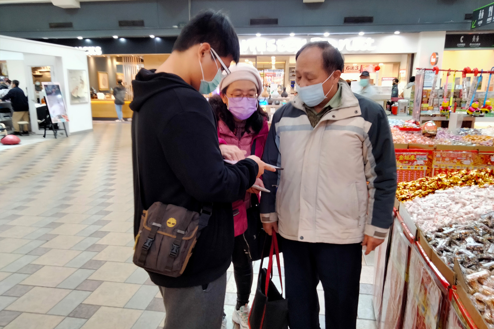
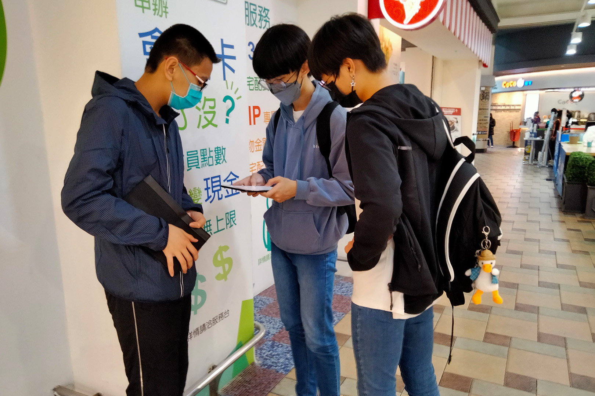
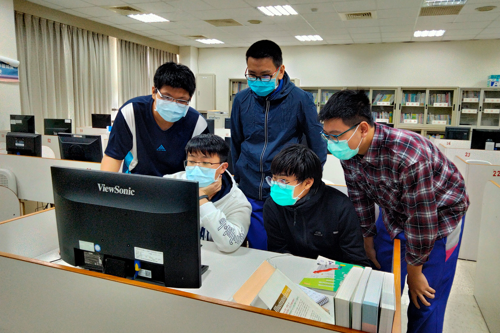
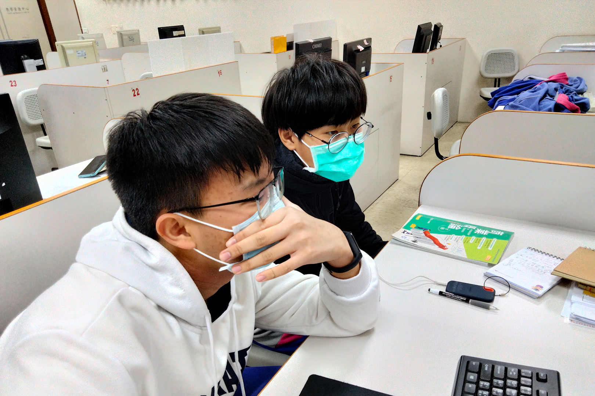

這次宜蘭參訪讓我們滿載而歸，不僅了解AI農場是一個什麼樣的存在，更是知道他們的理念及未來的走向，為了台灣他們願意犧牲自己的時間，不辭辛勞地解決農民的困擾，以及農業所面臨人工短缺問題，其精神實屬難能可貴。
他們值得學習的地方不只是這一點，正所謂願意低聲求教乃君子也，他們會為了共同的目標和每一個不同領域的各位高手合作並且虛心求教，造就了今天不錯的成果，教授說過「每一個人都像一小螺絲」，缺一不可，團隊就是這個樣子，官老師是其中一個願意跟AI農場的各位一起共同努力的人，他分享許多跟AI農場合作的成果，官老師也有和其他AI系列廠商合作，但他卻認為還是天龍提供的AI農場最好，不外乎就是因為他們經常虛心求教，真正的為農民著想，農民的需求都有聽進耳朵。